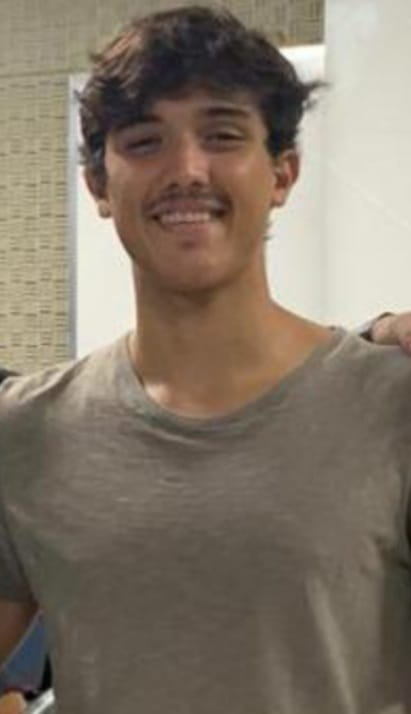

Olá mundo!
Bem vindo(a) a minha homepage na internet, é um site bem minimalista feito apenas com html e css em uma tarde chuvosa de domingo
- Currículo
- BIO
-
Python: A primeira linguagem de programação a gente nunca esquece.
tenho conhecimento de algumas bibliotecas para análise de dados como:
- Pandas
- Numpy
- Matplotlib
- Scikit-Learn
- Tensorflow
-
C#: Durante meu tempo na Globo, aprimorei minhas habilidades em C#, focando principalmente no desenvolvimento e manutenção de APIs. Adquiri uma compreensão profunda dos princípios RESTful e me tornei apto a ajudar na criação de APIs robustas e escaláveis. Além disso, adquiri experiência em debugging e otimização de performance, garantindo que as APIs operassem de maneira eficiente sob diferentes cargas de trabalho. Também me envolvi em trabalhos colaborativos com equipes multidisciplinares, o que aprimorou minha capacidade de comunicar complexidades técnicas de forma clara e eficaz.
-
VBA: Aprendi, também durante meu último estágio, a desenvolver planilhas que se comunicam com API's, recebendo e enviando informações, assim tendo desenvolvido habilidades com o software Excel
-
C: Aprendi principalmente com as matérias da faculdade Linguagem de Programação I(9.5) e Algoritmos e Estruturas de Dados(10.0)
-
Linux: Apenas o básico
-
HTML/CSS/JS: Apenas o básico. Aprendendo principalmente através do Odin project
Meu nome é Kalai, sou estudante de Ciência da Computação na UERJ, atualmente no 6 período
Meus interesses são principalmente(mas não exclusivamente) em Ciencia de dados e Machine Learning, também sou fã de GNU/Linux(atualmente usando Arch)
Meus principais Conhecimentos são
Fora tecnologia, sou apaixonado por Surf, literatura e corrida